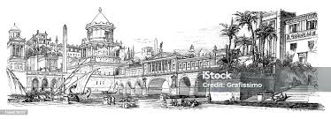
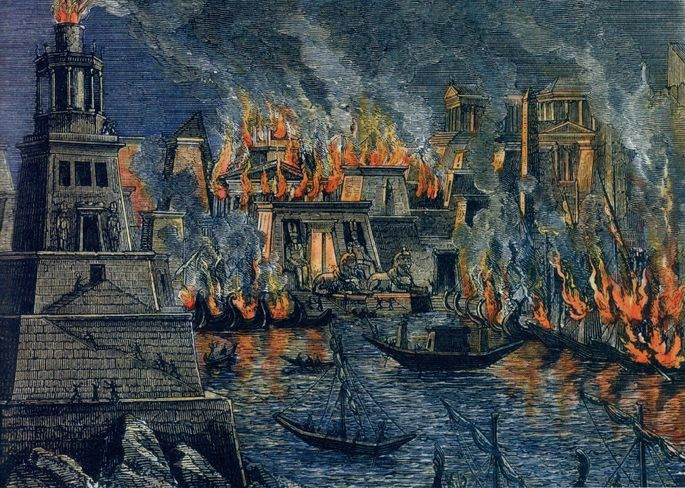

Introdução
A Biblioteca de Alexandria foi um dos maiores e mais célebres centros de conhecimento do mundo antigo, localizada na cidade de Alexandria, Egito. Fundada no início do século III a.C., durante o reinado de Ptolemeu I, a biblioteca não era apenas um repositório de textos, mas também um lugar de ensino e pesquisa. Com o objetivo de reunir e preservar o conhecimento de várias civilizações, ela tornou-se um símbolo da era helenística, representando o apogeu da busca pelo saber e o esforço para unir culturas e pensamentos. A biblioteca era um verdadeiro ícone da civilização, atraindo estudiosos e curiosos de todo o mundo.
A Grandeza da Biblioteca
Estima-se que a Biblioteca de Alexandria abrigava entre 200 mil e 700 mil pergaminhos. Seu acervo incluía obras de filosofia, matemática, astronomia, medicina, literatura e história. Muitos dos textos eram obras originais, enviadas por acadêmicos de todas as partes do mundo antigo, incluindo Grécia, Índia e Mesopotâmia. Alexandria tornou-se um local de encontro de grandes pensadores, como Euclides, o matemático; Arquimedes, o inventor; e Hiparco, o astrônomo, que vinham para estudar, ensinar e compartilhar conhecimentos. Além disso, os bibliotecários tinham um papel importante: buscavam copiar ou adquirir novos textos de embarcações que aportavam na cidade, ampliando continuamente o acervo da biblioteca. Com isso, a biblioteca não apenas preservou obras do passado, mas também promoveu inovações que impactaram o desenvolvimento da ciência e da filosofia.
O Mistério da Destruição
A destruição da biblioteca é envolta em mistério, e diversas teorias foram sugeridas para explicar seu fim. A primeira grande perda de parte de seu acervo teria ocorrido em 48 a.C., durante um incêndio acidental provocado por Júlio César, durante a guerra civil em Alexandria. Este incidente foi catastrófico, mas não o único. Relatos posteriores mencionam outras destruições causadas pelo Imperador romano Aureliano, por volta de 270 d.C., que buscava restaurar a ordem na cidade. Mais tarde, no século IV, a biblioteca sofreu novas perdas sob a ordem de Teófilo, Patriarca de Alexandria, que decidiu converter edifícios pagãos em igrejas. A destruição total da biblioteca permanece um mistério, mas é consenso entre os historiadores que sua perda foi gradual, até que não restasse quase nada do grande repositório de saberes. O que resta é um lamento por um patrimônio cultural que poderia ter moldado o conhecimento moderno de maneira distinta.
A Perda de Conhecimento
A destruição da Biblioteca de Alexandria foi um marco trágico na história da humanidade. Muitos dos pergaminhos ali guardados foram perdidos para sempre, deixando lacunas significativas no conhecimento e na cultura da Antiguidade. Alguns estudiosos acreditam que, se a biblioteca tivesse sobrevivido, a ciência e a filosofia teriam avançado séculos à frente do que ocorreu de fato. A perda do acervo significou também a perda de obras de autores menos conhecidos, que talvez contivessem sabedorias únicas de povos de todo o mundo antigo. Cada texto perdido representou uma oportunidade de aprendizagem e compreensão que nunca será recuperada. Este evento nos lembra da importância de preservar o conhecimento e da fragilidade da memória cultural.
Curiosidades
- A biblioteca possuía uma política de copiar qualquer livro encontrado nos navios que aportavam em Alexandria, criando cópias para o acervo. Isso não apenas expandiu o conhecimento, mas também garantiu que textos raros fossem preservados.
- Havia também um templo de culto às musas (o Museion), do qual a biblioteca fazia parte. O termo "museu" deriva dessa instituição de Alexandria, destacando sua influência na cultura ocidental.
- Grandes pensadores da época, como Ptolemeu e Hiparco, conduziram importantes descobertas sobre a posição dos planetas e as estrelas dentro do acervo da biblioteca. Eles utilizavam os textos da biblioteca para desafiar e expandir o entendimento do cosmos.